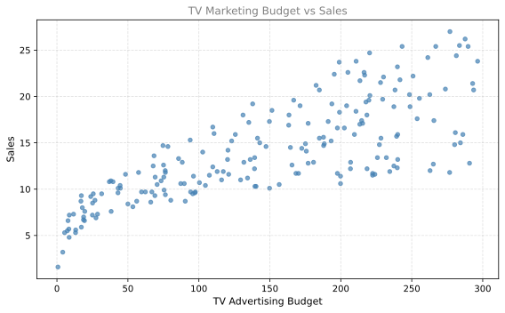
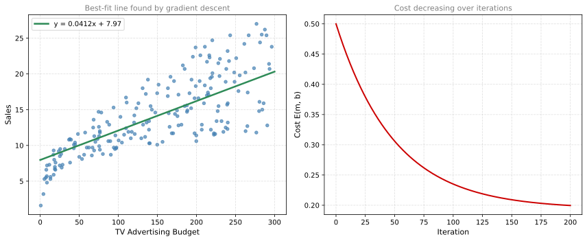

import numpy as np
import pandas as pd
# Load the TV marketing dataset
adv = pd.read_csv('../../media/tvmarketing.csv')
adv.head()| TV | Sales | |
|---|---|---|
| 0 | 230.1 | 22.1 |
| 1 | 44.5 | 10.4 |
| 2 | 17.2 | 9.3 |
| 3 | 151.5 | 18.5 |
| 4 | 180.8 | 12.9 |
June 13, 2026
In this lab, you will build a linear regression model to predict sales based on TV marketing expenses. You will implement gradient descent from scratch and see it converge to the same answer that analytical methods give. The dataset is a simple Kaggle dataset with two columns: TV marketing budget and sales amount.
| TV | Sales | |
|---|---|---|
| 0 | 230.1 | 22.1 |
| 1 | 44.5 | 10.4 |
| 2 | 17.2 | 9.3 |
| 3 | 151.5 | 18.5 |
| 4 | 180.8 | 12.9 |
Number of data points: 200
TV advertising budget range: 0.7 to 296.4
Sales range: 1.6 to 27.0
The goal is to find the line \(y = mx + b\) that best predicts sales from the TV advertising budget.
The TV advertising budget values range from 0.7 to 296.4, while sales range from 1.6 to 27.0. These numbers are on very different scales. If we run gradient descent directly, we would need an extremely tiny learning rate (around 0.000001) and thousands of iterations.
A simple fix is normalization. For each array, we subtract the mean and divide by the standard deviation. This brings both arrays to roughly the same scale (centered at zero, spread of about 1).
X_norm range: -1.71 to 1.74
Y_norm range: -2.39 to 2.49After gradient descent finds the best \(m\) and \(b\) for the normalized data, we can convert back to original units.
The cost function (from the previous page):
\[ E(m, b) = \frac{1}{2n} \sum_{i=1}^{n} (mx_i + b - y_i)^2 \]
The partial derivatives:
Run gradient descent on the normalized data:
After 200 iterations (normalized):
m = 0.677422
b = -0.000000
Cost = 0.19955422# Convert normalized slope/intercept back to original scale
m_original = m_gd * np.std(Y) / np.std(X)
b_original = np.mean(Y) - m_original * np.mean(X) + b_gd * np.std(Y)
print(f"In original units:")
print(f" Slope (m) = {m_original:.8f}")
print(f" Intercept (b) = {b_original:.8f}")
print(f" Best-fit line: Sales = {m_original:.4f} * TV + {b_original:.2f}")In original units:
Slope (m) = 0.04116770
Intercept (b) = 7.96909894
Best-fit line: Sales = 0.0412 * TV + 7.97# NumPy's polyfit gives the exact analytical solution
m_exact, b_exact = np.polyfit(X, Y, 1)
print(f"Exact solution (NumPy polyfit):")
print(f" Slope = {m_exact:.8f}")
print(f" Intercept = {b_exact:.8f}")
print(f"\nDifference from gradient descent:")
print(f" Slope error = {abs(m_original - m_exact):.10f}")
print(f" Intercept error = {abs(b_original - b_exact):.10f}")Exact solution (NumPy polyfit):
Slope = 0.04753664
Intercept = 7.03259355
Difference from gradient descent:
Slope error = 0.0063689436
Intercept error = 0.9365053936The gradient descent result matches the analytical solution.
fig, axes = plt.subplots(1, 2, figsize=(12, 5))
# Left: data with best-fit line
ax = axes[0]
ax.scatter(X, Y, color='#4682B4', s=20, alpha=0.7)
x_line = np.linspace(0, 300, 100)
ax.plot(x_line, m_original * x_line + b_original, color='#2E8B57', linewidth=2.5,
label=f'y = {m_original:.4f}x + {b_original:.2f}')
ax.set_xlabel('TV Advertising Budget', fontsize=11)
ax.set_ylabel('Sales', fontsize=11)
ax.set_title('Best-fit line found by gradient descent', fontsize=11, color='gray')
ax.legend(fontsize=10)
ax.grid(True, linestyle='--', alpha=0.4)
# Right: cost over iterations
ax = axes[1]
costs = [h[2] for h in history]
ax.plot(range(len(costs)), costs, color='#CC0000', linewidth=2)
ax.set_xlabel('Iteration', fontsize=11)
ax.set_ylabel('Cost E(m, b)', fontsize=11)
ax.set_title('Cost decreasing over iterations', fontsize=11, color='gray')
ax.grid(True, linestyle='--', alpha=0.4)
plt.tight_layout()
plt.show()
The cost drops rapidly in the first few iterations and then flattens out as gradient descent converges to the minimum.
Progress
42% completed (558 of 1321 min)